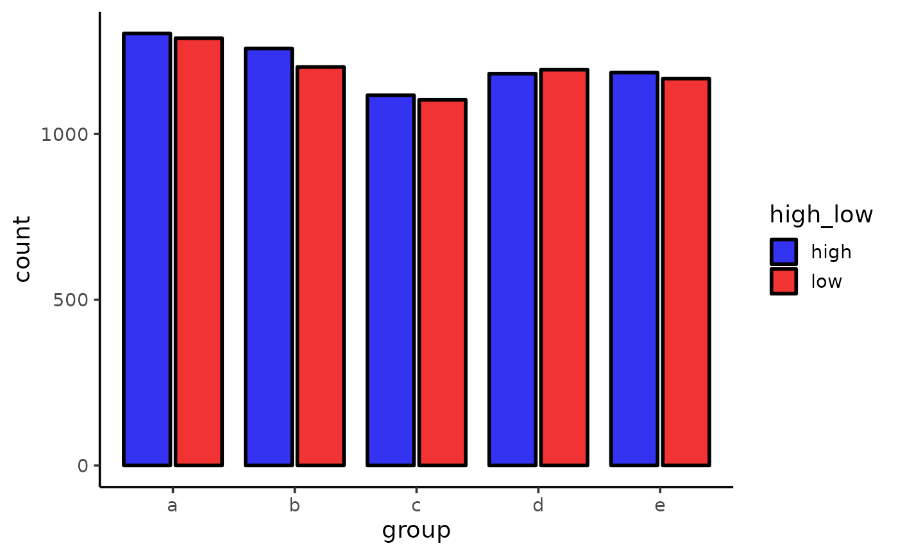
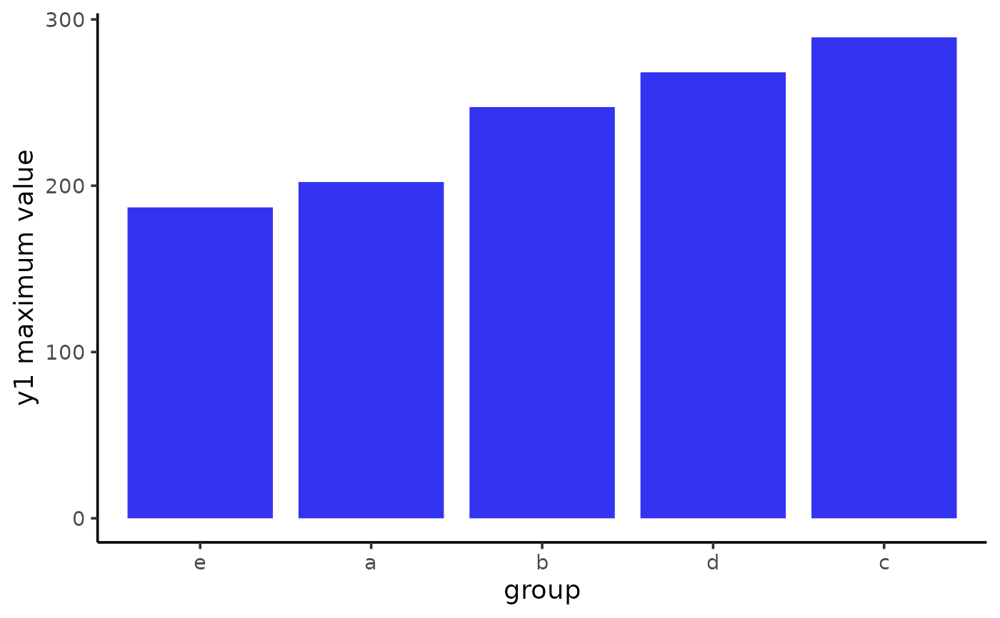

Easily generate bar plots using ggplot2 with a simplified
customization interface for common modifications with static (ggplot) and
interactive (plotly) output options. The static output is useful for
producing static reports (e.g. for manuscripts) and is readily customized
further using ggplot2 syntax. The interactive output is helpful for
exploring the data and producing dynamic html reports. To plot a bar graph
of sample means or medians and error bars, see
plot_stat_error instead. See
this
blog post for an introduction to ggplot2.
plot_bar(
data,
x = NULL,
y = NULL,
...,
width = 0.85,
position = c("dodge", "fill", "stack"),
dodge_padding = 0.1,
fill_var = NULL,
colour_var = NULL,
xlab = NULL,
ylab = NULL,
title = NULL,
title_hjust = 0.5,
caption = NULL,
caption_hjust = 0,
fill_var_title = NULL,
colour_var_title = NULL,
ylim = c(NA, NA),
ybreaks = ggplot2::waiver(),
transform_y = FALSE,
y_transformation = "log10",
y_var_labs = ggplot2::waiver(),
x_var_order_by_y = NULL,
x_var_order = NULL,
fill_var_order_by_y = NULL,
fill_var_order = NULL,
colour_var_order_by_y = NULL,
colour_var_order = NULL,
x_var_labs = NULL,
fill_var_labs = NULL,
colour_var_labs = NULL,
fill_var_values = NULL,
colour_var_values = NULL,
palette = c("plasma", "C", "magma", "A", "inferno", "B", "viridis", "D", "cividis",
"E"),
palette_direction = c("d2l", "l2d"),
palette_begin = 0,
palette_end = 0.9,
alpha = 0.8,
greyscale = FALSE,
line_size = 1,
coord_flip = FALSE,
theme = c("classic", "bw", "grey", "light", "dark", "minimal"),
text_size = 14,
font = c("sans", "serif", "mono"),
facet_var = NULL,
facet_var_order = NULL,
facet_var_labs = NULL,
facet_var_strip_position = c("top", "bottom"),
facet_var_text_bold = TRUE,
legend_position = c("right", "left", "top", "bottom"),
omit_legend = FALSE,
interactive = FALSE,
aesthetic_options = FALSE
)A data frame or tibble containing at least one categorical variable.
A categorical variable you want to obtain separate bar plots for (quoted or unquoted), e.g. x = "variable" or x = variable. If you want to plot all bars on top of each other (position = "fill" or position = "stack") to form a single banded bar leave "x" blank and assign a variable to either fill_var or colour_var instead. N.B. failing to assign a variable to x will also remove x-axis ticks and labels.
A numeric variable containing the values you would like plotted on
the y-axis (quoted or unquoted), e.g. y = "variable" or y = variable. If y
is not specified, then the stat = "count" option will be used for
geom_bar and the counts of the variable(s) assigned
to x, fill_var, and/or colour_var will be plotted on the y-axis.
graphical parameters (not associated with variables) to be passed
to geom_bar, e.g. colour or fill, to be applied
to all bars. To see some of the available options in a web browser, set the
aesthetic_options argument to TRUE.
Adjusts the width of the bars (default = 0.85).
Determines how bars are arranged relative to one another when
a grouping variable is assigned to either fill_var or colour_var. The
default, "dodge", uses position_dodge2 to arrange
bars side-by-side; "stack" places the bars on top of each other; "fill"
also stacks bars but additionally converts y-axis from counts to
proportions (assuming y argument is unspecified).
If position = "dodge", this controls the gap width
between adjacent bars (default = 0.1). To eliminate the gap, set this to 0.
To overlay bars use a negative value e.g. -0.5. See
position_dodge2 for details.
Use if you want to assign a variable to the bar fill colour,
e.g. fill_var = "grouping_variable" or fill_var = grouping_variable.
Produces separate sets of bars for each level of the fill variable. See
aes for details.
Use if you want to assign a variable to the bar outline
colour, e.g. colour_var = "grouping_variable" or colour_var =
grouping_variable. Produces separate sets of bars for each level of the
colour variable. See aes for details.
Specify/overwrite the x-axis label using a character string, e.g. "x-axis label"
Specify/overwrite the y-axis label using a character string, e.g. "y-axis label"
Add a main title to the plot using a character string, e.g. "bar plots of y for each group of x"
Left-to-right/horizontal justification (alignment) of the main plot title. Accepts values from 0 (far left) to 1 (far right). Default is 0.5 (centre).
Add a figure caption to the bottom of the plot using a character string.
Left-to-right/horizontal justification (alignment) of the caption. Accepts values from 0 (far left) to 1 (far right). Default is 0 (left).
If a variable has been assigned to fill using fill_var, this allows you to modify the variable label in the plot legend.
If a variable has been assigned to colour using colour_var, this allows you to modify the variable label in the plot legend.
specify the y-axis limits, e.g. ylim = c(lower_limit, upper_limit). Use NA for the existing minimum or maximum value of y, e.g. the default is ylim = c(NA, NA)
This allows you to change the break points to use for tick
marks on the y-axis. seq is particularly useful here. See
scale_y_continuous for details. If ybreaks is
specified, then ylim should be also.
Would you like to transform the y axis? (TRUE or FALSE)
If transform_y = TRUE, this determines the
transformation to be applied. Common choices include "log10" (the default),
"log2", "sqrt", or "exp". See scale_continuous for
details.
Allows you to modify the labels displayed with the y-axis
tick marks. See scale_continuous for details.
If a variable has been assigned to x, this allows you to sort the bars in order of increasing/ascending ("i" or "a") or decreasing ("d") value of y. If no variable is assigned to y, then the sorting occurs based on relative counts (position = "dodge" or position = "stack") or proportions (position = "fill").
If a variable has been assigned to x, this allows you to
manually modify the order of the variable groups, e.g. x =
grouping_variable, x_var_order = c("group_2", "group_1"). See
fct_relevel for details.
If a variable has been assigned to fill_var, this allows you to sort the bars in order of increasing/ascending ("i" or "a") or decreasing ("d") value of y. If no variable is assigned to y, then the sorting occurs based on relative counts (position = "dodge" or position = "stack") or proportions (position = "fill").
If a variable has been assigned to fill using fill_var,
this allows you to modify the order of the variable groups, e.g. fill_var =
grouping_variable, fill_var_order = c("group_2", "group_1"). See
fct_relevel for details.
If a variable has been assigned to colour_var, this allows you to sort the bars in order of increasing/ascending ("i" or "a") or decreasing ("d") value of y. If no variable is assigned to y, then the sorting occurs based on relative counts (position = "dodge" or position = "stack") or proportions (position = "fill").
If a variable has been assigned to colour using
colour_var, this allows you to modify the order of the variable groups,
e.g. colour_var = grouping_variable, fill_var_order = c("group_2",
"group_1"). See fct_relevel for details.
If a variable has been assigned to x, this allows you to
modify the labels of the variable groups, e.g. x = grouping_variable,
x_var_labs = c("group_1_new_label" = "group_1_old_label",
"group_2_new_label" = "group_2_old_label"). See
fct_recode for details.
If a variable has been assigned to fill using fill_var,
this allows you to modify the labels of the variable groups, e.g. fill_var
= grouping_variable, fill_var_labs = c("group_1_new_label" =
"group_1_old_label", "group_2_new_label" = "group_2_old_label"). See
fct_recode for details.
If a variable has been assigned to colour using
colour_var, this allows you to modify the labels of the variable groups,
e.g. colour_var = grouping_variable, colour_var_labs =
c("group_1_new_label" = "group_1_old_label", "group_2_new_label" =
"group_2_old_label"). See fct_recode for details.
If a variable has been assigned to fill using
fill_var, this allows you to modify the colours assigned to the fill of
each of the variable groups, e.g. fill_var = grouping_variable,
fill_var_values = c("blue", "red"). See
scale_fill_manual for details. For the colour
options available in base R, see colour_options.
If a variable has been assigned to colour using
colour_var, this allows you to modify the colours assigned to the outline
of each of the variable groups, e.g. colour_var = grouping_variable,
colour_var_values = c("blue", "red"). See
scale_fill_manual for details. For the colour
options available in base R, see colour_options.
If a variable is assigned to fill_var or colour_var, this determines which viridis colour palette to use. Options include "plasma" or "C" (default), "magma" or "A", "inferno" or "B", "viridis" or "D", and "cividis" or "E". See this link for examples. You can override these colour palettes with fill_var_values or colour_var_values.
Choose "d2l" for dark to light (default) or "l2d" for light to dark.
Value between 0 and 1 that determines where along the
full range of the chosen colour palette's spectrum to begin sampling
colours. See scale_fill_viridis_d for details.
Value between 0 and 1 that determines where along the full
range of the chosen colour palette's spectrum to end sampling colours. See
scale_fill_viridis_d for details.
This adjusts the transparency/opacity of the graphical components of the plot, ranging from 0 = 100% transparent to 1 = 100% opaque.
Set to TRUE if you want the plot converted to greyscale.
Controls the thickness of the bar outlines.
Flips the x and y axes. See
coord_flip for details.
Adjusts the theme using 1 of 6 predefined "complete" theme
templates provided by ggplot2. Currently supported options are: "classic"
(the elucidate default), "bw", "grey" (the ggplot2 default), "light",
"dark", & "minimal". See theme_classic for more
information.
This controls the size of all plot text. Default = 14.
This controls the font of all plot text. Default = "sans" (Arial). Other options include "serif" (Times New Roman) and "mono" (Courier New).
Use if you want separate plots for each level of a grouping
variable (i.e. a faceted plot), e.g. facet_var = "grouping_variable" or
facet_var = grouping_variable. See facet_wrap for
details.
If a variable has been assigned for faceting using
facet_var, this allows you to modify the order of the variable groups, e.g.
facet_var = grouping_variable, facet_var_order = c("group_2", "group_1").
See fct_relevel for details.
If a variable has been assigned for faceting using
facet_var, this allows you to modify the labels of the variable groups
which will appear in the facet strips, e.g. facet_var = grouping_variable,
facet_var_labs = c("group_1_new_label" = "group_1_old_label",
"group_2_new_label" = "group_2_old_label"). See
fct_recode for details.
If a variable has been assigned for faceting using facet_var, this allows you to modify the position of the facet strip labels. Sensible options include "top" (the default) or "bottom".
If a variable has been assigned for faceting using facet_var, this allows you to use boldface (TRUE/default or FALSE) for the facet strip label text.
This allows you to modify the legend position. Options include "right" (the default), "left", "top", & "bottom".
Set to TRUE if you want to remove/omit the legends.
Determines whether a static ggplot object or an interactive html
plotly object is returned. See ggplotly for details.
If set to TRUE, opens a web browser to the tidyverse online aesthetic options vignette.
A ggplot object or plotly object depending on whether static or interactive output was requested.
Wickham, H. (2016). ggplot2: elegant graphics for data analysis. New York, N.Y.: Springer-Verlag.
#plotting group counts
plot_bar(pdata,
x = g,
xlab = "group",
fill_var = high_low,
colour = "black",
fill_var_values = c("blue2", "red2"))

#plotting specific values on the y-axis, e.g. a grouped summary statistic
library(dplyr)
#>
#> Attaching package: ‘dplyr’
#> The following objects are masked from ‘package:stats’:
#>
#> filter, lag
#> The following objects are masked from ‘package:base’:
#>
#> intersect, setdiff, setequal, union
grouped_y1_max <- pdata %>%
group_by(g) %>%
summarise(y1_max = max(y1), .groups = "drop")
plot_bar(grouped_y1_max, x = g, y = y1_max,
xlab = "group", ylab = "y1 maximum value",
x_var_order_by_y = "i", #order levels of x by increasing y value
fill = "blue2")
